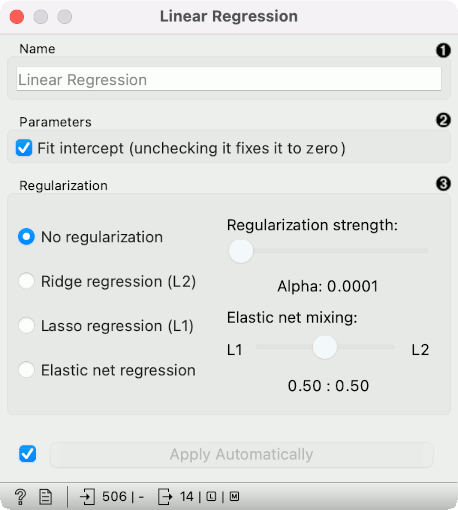
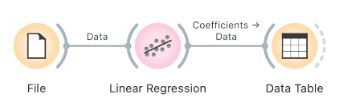
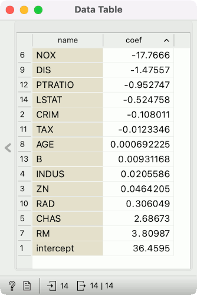
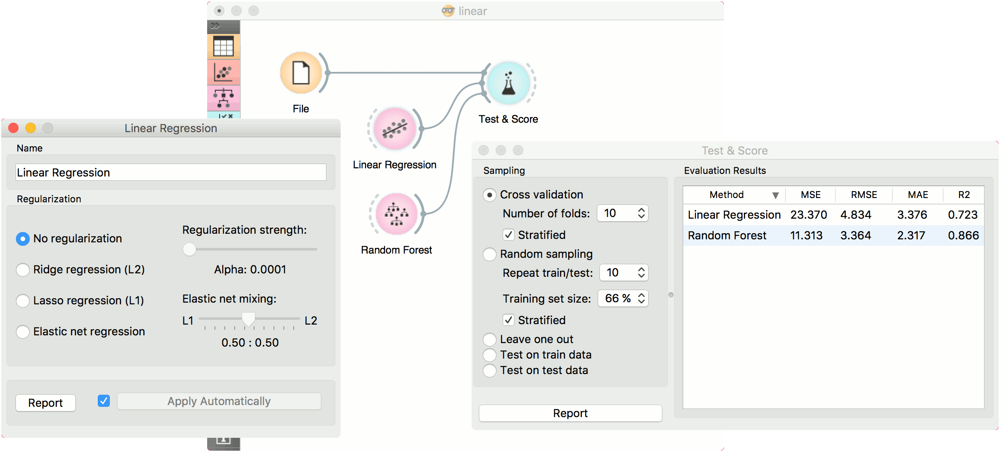

Linear Regression
A linear regression algorithm with optional L1 (LASSO), L2 (ridge) or L1L2 (elastic net) regularization.
Inputs
- Data: input dataset
- Preprocessor: preprocessing method(s)
Outputs
- Learner: linear regression learning algorithm
- Model: trained model
- Coefficients: linear regression coefficients
The Linear Regression widget constructs a learner/predictor that learns a linear function from its input data. The model can identify the relationship between a predictor xi and the response variable y. Additionally, Lasso and Ridge regularization parameters can be specified. Lasso regression minimizes a penalized version of the least squares loss function with L1-norm penalty and Ridge regularization with L2-norm penalty.
Linear regression works only on regression tasks.

- The learner/predictor name
- Parameters: Fit intercept. Unchecking the option forces the intercept to zero.
- Choose a model to train:
- no regularization
- a Ridge regularization (L2-norm penalty)
- a Lasso bound (L1-norm penalty)
- an Elastic net regularization
Preprocessing
Linear Regression uses default preprocessing when no other preprocessors are given. It executes them in the following order:
- removes instances with unknown target values
- continuizes categorical variables (with one-hot-encoding)
- removes empty columns
- imputes missing values with mean values
To remove default preprocessing, connect an empty Preprocess widget to the learner.
Feature Scoring
Linear Regression can be used with Rank for feature scoring. See Learners as Scorers for an example.
Observing Coefficients
To observe coefficients of linear regression, first build a model, then pass the model to the Data Table. This will automatically connect the Coefficients output to the Data Table, where you can sort the table by coefficients and observe which variables positively and negatively correlate with the prediction.
 
Example
Below, is a simple workflow with housing dataset. We trained Linear Regression and Random Forest and evaluated their performance in Test & Score.
